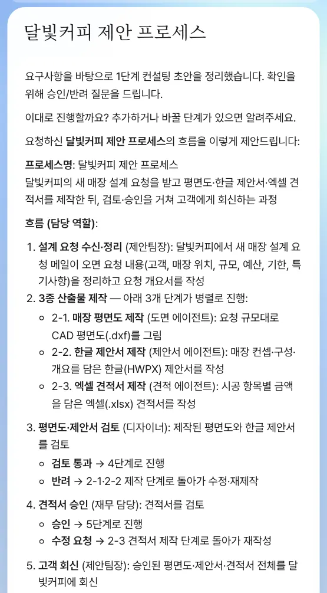
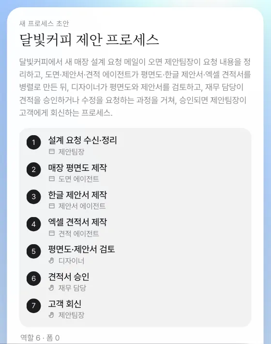
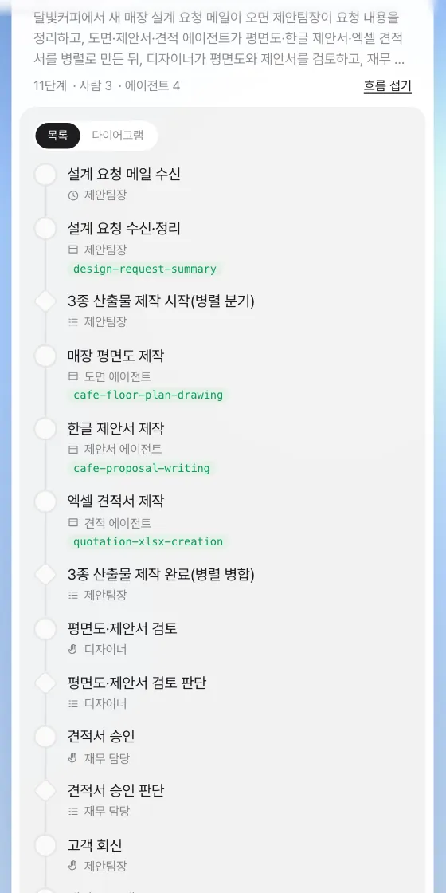
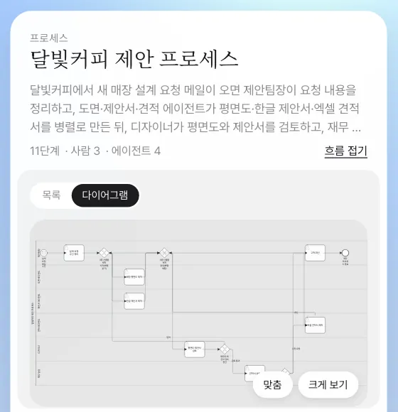

달빛커피는 2호점에 이어 3호점, 4호점을 열 계획입니다. 매번 같은 순서로 하는 제안 업무를 장진영 팀장이 채팅으로 설명하면, 비서가 흐름 초안을 제안하고, 확인을 받아 흐름도(BPMN)·역할·폼이 담긴 프로세스 정의를 만들어 저장합니다.
왜 프로세스로 만드나#
9장부터 16장까지 달빛커피 2호점 건은 그때그때 처리했습니다. 메일을 받고, 비서가 평면도·제안서·견적서를 만들고, 김민지가 디자인을 보고, 박서연이 견적을 보고, 회의를 하고, 회신했습니다. 매장이 하나 더 생길 때마다 같은 일을 다시 기억해 내야 한다면 빠뜨리기 쉽습니다.
프로세스로 만들면 이렇게 바뀝니다.
| 그때그때 | 프로세스로 |
|---|---|
| 다음에 누가 무엇을 할지 사람이 기억 | 단계와 순서가 정의에 있음 |
| 일을 넘길 때마다 공유·멘션 | 단계가 끝나면 다음 역할의 담당자에게 할 일이 자동으로 감 |
| 에이전트에게 매번 요청 | 에이전트 단계는 자동 실행 |
| 진행 상황을 물어봐야 앎 | 인스턴스 화면에서 단계별로 보임(18장) |
Lite의 프로세스 만들기는 Process GPT의 프로세스 생성 스킬을 그대로 씁니다. 결과는 BPMN으로 저장됩니다. BPMN은 업무 흐름을 단계·갈림길·담당 줄로 그리는 국제 표준 그림 표기입니다. 사람이 직접 그릴 필요는 없습니다.
따라 하기 1 — 말로 설명하기#
장진영 팀장 계정의 채팅에서 “○○ 프로세스를 만들어 줘”로 시작하고, 아는 만큼 순서와 담당을 적습니다.
달빛커피 제안 프로세스를 만들어 줘. 달빛커피에서 새 매장 설계 요청 메일이 오면 제안팀장이 요청 내용을 정리하고, 도면 에이전트가 평면도를, 제안서 에이전트가 한글 제안서를, 견적 에이전트가 엑셀 견적서를 만들어. 그다음 디자이너가 평면도와 제안서를 검토하고, 재무 담당이 견적을 승인하거나 수정을 요청해. 승인되면 제안팀장이 고객에게 회신해.
비서는 바로 정의를 만들지 않고, 먼저 흐름 초안을 실무 수준으로 정리해 확인을 받습니다. 말하지 않은 부분도 채워 넣습니다. 실습에서는 세 산출물을 병렬로 만들고, 디자이너가 반려하면 평면도·제안서 제작으로, 재무 담당이 수정 요청하면 견적서 제작으로 되돌아가는 흐름을 제안했습니다.

확인할 것: 초안에 프로세스 이름, 단계별 담당 역할, 갈림길(검토 통과/반려, 승인/수정 요청), 시작과 끝이 있습니다. 문장은 실행마다 다릅니다.
바꿀 곳이 있으면 이때 말합니다. 예: 디자이너 검토와 견적 승인은 동시에 해도 돼 · 회신 전에 제안팀장이 회의를 한 번 하도록 넣어 줘.
따라 하기 2 — 확인하고 정의 만들기#
초안이 마음에 들면 답합니다.
네, 이대로 진행해서 달빛커피 제안 프로세스 정의까지 만들어 주세요.
비서는 확인한 흐름으로 정의 파일을 쓰고, 에이전트가 쓸 스킬과 에이전트를 고르거나 만들고, 사람이 입력할 단계마다 폼을 만든 뒤 스스로 점검합니다. 끝나면 채팅에 새 프로세스 초안 카드가 뜹니다. 이 단계는 수십 분이 걸릴 수 있습니다. 현재 버전에서는 중간에 답이 멈추기도 하므로, 그럴 때는 진행해 주세요라고 보내 이어 가게 하세요.

확인할 것: 초안 카드에 프로세스 이름, 단계 7개(설계 요청 수신·정리 → 평면도·제안서·견적서 제작 → 평면도·제안서 검토 → 견적서 승인 → 고객 회신)와 각 단계의 역할이 있습니다.
따라 하기 3 — 저장하고 흐름 보기#
초안 카드의 「프로세스로 저장」을 누릅니다. Process GPT의 정의 저장 경로 그대로 저장되고, 카드가 프로세스 카드로 바뀝니다. 카드의 「흐름 보기」를 누르면 목록과 BPMN 다이어그램을 오갈 수 있습니다. 나중에 달빛커피 제안 프로세스 흐름 보여 줘라고 해도 같은 카드가 뜹니다.


카드 머리의 “11단계 · 사람 3 · 에이전트 4”는 갈림길(병렬 분기·병합, 검토·승인 판단)까지 센 수입니다. 실습에서는 첫 단계(설계 요청 수신·정리)에도 요청을 정리하는 스킬이 붙어 에이전트 단계로 세어졌습니다. 카드의 「시작」을 누르면 18장처럼 프로세스 한 건이 시작됩니다.
저장하면 폼·에이전트·스킬까지 함께 저장됩니다
「프로세스로 저장」은 정의와 BPMN만이 아니라, 비서가 작업 폴더에 만든 폼(사람 단계의 입력 칸), 에이전트, 스킬까지 다시 모아 함께 저장합니다. 에이전트는 Process GPT 화면에서 만든 것과 같은 에이전트로 등록되어 정의의 단계와 이어지고(같은 이름이 있으면 그것을 씁니다), 스킬은 팀 스킬로 설치됩니다. 초안 카드의 폼 수는 생성 중에 받은 정보로 세므로 따라 하기 2 사진의 “폼 0”처럼 적게 보일 수 있지만, 저장에는 작업 폴더의 폼이 들어갑니다.
생성하는 동안 다른 일을 해도 됩니다
프로세스 생성은 여러 단계를 한 번에 진행하므로 시간이 걸립니다. 그사이 채팅에 다른 요청을 보내도 생성은 끊기지 않습니다. 같은 대화로 가는 요청은 「대기」로 표시됐다가 생성이 끝난 뒤 처리되고, 다른 대화의 일은 나란히 진행됩니다(3장).
이 장에서 만든 프로세스의 뼈대#
| 단계 | 역할 | 종류 |
|---|---|---|
| 설계 요청 수신·정리 | 제안팀장 | 사람 + 에이전트 (실습에서는 요청 정리 스킬이 붙어, 카드에는 에이전트 단계로 셉니다) |
| 매장 평면도 제작 · 한글 제안서 제작 · 엑셀 견적서 제작 (병렬) | 도면·제안서·견적 에이전트 | 에이전트 |
| 평면도·제안서 검토 (통과 / 반려 → 다시 제작) | 디자이너 | 사람 |
| 견적서 승인 (승인 / 수정 요청 → 다시 작성) | 재무 담당 | 사람 |
| 고객 회신 | 제안팀장 | 사람 |
역할의 담당자는 관리자가 「설정 › 팀·역할」에서 정합니다. 이 프로세스의 디자이너는 김민지, 재무 담당은 박서연, 제안팀장은 장진영입니다. 담당자를 정하지 않은 사람 역할은 프로세스를 시작한 사람이 맡습니다(18장).
좋은 설명의 조건
- 누가(역할)와 무엇을(산출물)을 단계마다 말하세요. “디자이너가 평면도와 제안서를 검토”처럼.
- 갈림길을 말하세요. “승인하거나 수정을 요청해”라고 하면 되돌아가는 흐름이 생깁니다.
- 시작과 끝을 말하세요. “메일이 오면”, “고객에게 회신하면 끝”.
- 에이전트에게 맡길 단계는 “○○ 에이전트가”라고 이름을 붙이면 등록된 에이전트와 그 스킬이 연결됩니다.
다음 장으로#
정의는 설계도입니다. 다음 장에서는 프로세스를 실제로 시작해, 할 일이 사람과 에이전트 사이를 오가고, 역할 담당자에게 알림이 가고, 진행 상황과 산출물이 쌓이는 모습을 봅니다(18장). 한 바퀴를 빠르게 보기 위해 단계가 짧은 예제 「출장비 정산」으로 먼저 돌려 봅니다.
확인 문제
- 흐름 초안에서 “3종 산출물 제작”이 병렬로 제안된 이유는 무엇일까요? 순서대로 하도록 바꾸려면 어떻게 말하면 되나요?
- 재무 담당이 「수정 요청」을 고르면 흐름은 어디로 돌아가나요?
- 이 프로세스를 시작하면 「설계 요청 수신·정리」 단계는 누구에게 가나요? 「설정 › 팀·역할」에서 제안팀장을 비워 두면요?
답
- 세 산출물이 서로를 기다릴 필요가 없다고 보았기 때문입니다(요청 개요서만 있으면 각각 만들 수 있음). 순서가 필요하면
견적서는 평면도가 나온 뒤에 만들어 줘처럼 말하면 초안이 그 순서로 바뀝니다. 실제로 견적 면적이 평면도에서 나온다면 이렇게 바꾸는 편이 맞습니다. - 엑셀 견적서 제작 단계로 돌아가 견적 에이전트가 다시 작성하고, 다시 재무 담당의 승인으로 옵니다.
- 제안팀장 역할의 담당자(실습에서는 장진영)에게 갑니다. 비워 두면 프로세스를 시작한 사람이 맡습니다.